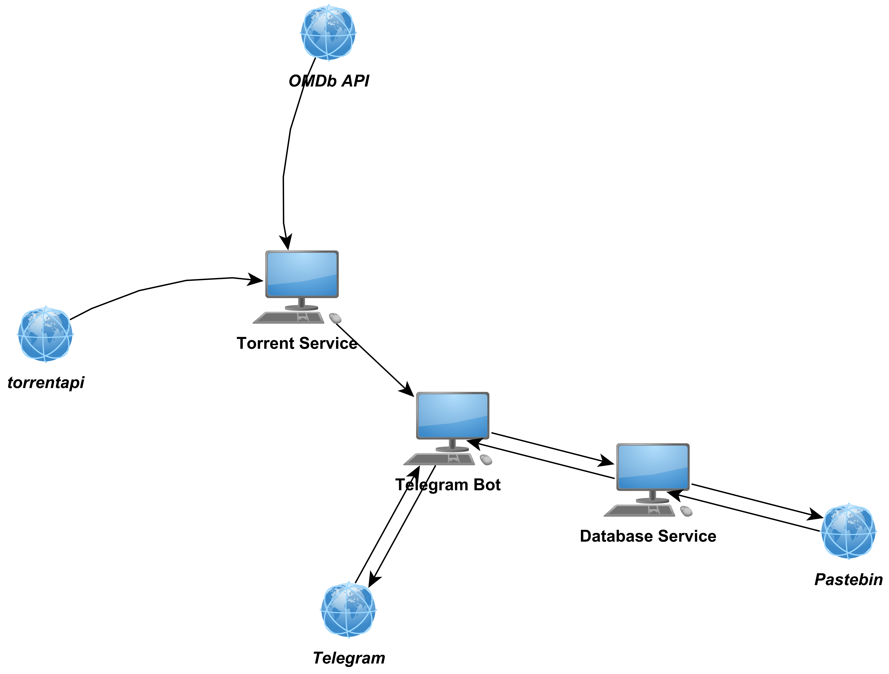

PopularTorrentBot Documentation¶
PopularTorrentBot is a simple telegram bot that tells you which are the most popular torrents for a given date. It will give you information on a series of categories of torrents. These are:
- movies
- TV-series
- software
- ebooks
- music
- games
- all
This bot was created as the final project for the course of Introduction to Service Design and Engineering course at UNITN.
If the categorie is either movie or TV-series then the bot will also fetch the relevant information from IMBD (by using the excelent OMDb API service), and shows it to you.
As mentioned above, OMDb API is used to fetch movie/tv-series information. For the torrent information we use the torrentapi service. And for saving informaiton we use a mix of a local database in SQLite and Pastebin. In Pastebin we store the bulk of the data and in the database we just store key value pairs, where the key is composed of the date + category, and the value is a pastebin URL. In this way, when we get asked for information on a category for a specific date we can just pull the data from Pastebin.
You can use the bot by adding @ptorrentsbot as a contect in Telegram.
If you want to run everything yourself then you can refer to the instructions here.
Structure of the application¶
The image below shows the structure of the application. The workstation images denote applications developed as part of this project (so the Torrent service, database service, and the telegram bot). The globes denote external services. The direction of the arrows indicate the flow of data.
We can see that the torrent service consumes data fromt the OMDb service and from the torrentapi service, and is in turn consumed by the telegram bot. The database service is consumed by the telegram bot, and the bot can send data to the database service, and this in turn can send data to the Pastebin service. The telegram bot uses the Telegram API to get new events (messages), computes the appropiate response and then once again uses the Telegram API to send said response.
How to access the services¶
The torrent and database services can be accessed at the followng URLs (refer to their respective documentations in the links shown in the following section).
- Torrent Service: some url
- Database Service: some url
Structure of the project¶
This repository contains 3 different projects:
- The database service
- The torrent service
- The telegram bot
These are executed as standalone applications, and can communicate freely between themselves. Documentation for each of these parts can be seen by visiting the following links:
Documentation for specific parts:
Credits¶
We use python-telegram-bot as the library to create the telegram bot.
We also use a modified version of the rarbgapi library to get data from torrents. The modifications that were made are (possibly a pull request to the project will be done in the future):
- Now it is possible to request multiple categories at once
- Torrent object now also contains IMDB data as well as seeder and leecher information
- New bundle category keys have been created